Code
counties <- AOI::aoi_get(state = "conus", county = "all")
counties <- st_transform(counties, crs=5070)National Dam Inventory (NID): From Counts to Local Clustering
In this lab we will explore the impacts of tessellated surfaces and the modifiable areal unit problem (MAUP) using the National Dam Inventory maintained by the United States Army Corps of Engineers. The work requires writing reusable functions and careful consideration of feature aggregation/simplification, spatial joins, and data visualization. The end goal is to visualize the distribution of dams and their purposes across the country.
Here we will prepare five tessellated surfaces from CONUS and write a function to plot them in a descriptive way.
First, we need a spatial file of CONUS counties. For future area calculations we want these in an equal area projection (EPSG:5070).
counties <- AOI::aoi_get(state = "conus", county = "all")
counties <- st_transform(counties, crs=5070)For triangle based tessellations we need point locations to serve as our “anchors”.
To achieve this:
generate county centroids using st_centroid
Since, we can only tessellate over a feature we need to combine or union the resulting 3,108 POINT features into a single MULTIPOINT feature
Since these are point objects, the difference between union/combine is mute
ctrds <- st_centroid(counties)Warning: st_centroid assumes attributes are constant over geometriesctrds <- st_union(ctrds)Tessellations/Coverage’s describe the extent of a region with geometric shapes, called tiles, with no overlaps or gaps.
Tiles can range in size, shape, area and have different methods for being created.
Some methods generate triangular tiles across a set of defined points (e.g. Voronoi and Delaunay triangulation)
Others generate equal area tiles over a known extent (st_make_grid)
For this lab, we will create surfaces of CONUS using using 4 methods, 2 based on an extent and 2 based on point anchors:
Tessellations :
st_voronoi: creates a Voronoi tessellation
st_triangulate: triangulates a set of points (not constrained)
Coverages:
st_make_grid: creates a square grid covering the geometry of an sf or sfc object
st_make_grid(square = FALSE): creates a hexagonal grid covering the geometry of an sf or sfc object
The side of coverage tiles can be defined by a cell resolution or a specified number of cell in the X and Y direction
fix_tes <- function(sfc){
sfc_fix <- sfc |>
st_collection_extract("POLYGON") |>
st_sf() |>
mutate(id = seq(len = n())) |>
st_cast()
return(sfc_fix)
}
vrni <- st_voronoi(ctrds)
vrni <- fix_tes(vrni)
tri <- st_triangulate(ctrds)
tri <- fix_tes(tri)
grid <- st_make_grid(ctrds, n=70)
grid <- fix_tes(grid)Warning in st_collection_extract.sfc(sfc, "POLYGON"): x is already of type
POLYGON.hgrid <- st_make_grid(ctrds, square=FALSE, n=70)
hgrid <- fix_tes(hgrid)Warning in st_collection_extract.sfc(sfc, "POLYGON"): x is already of type
POLYGON.If you plot the above tessellations you’ll see that the Voronoi, Delaunay triangulation, hexagon, and square grids all produce regions far beyond the boundaries of CONUS.
We need to cut these boundaries to CONUS borders.
conus <- counties |>
st_union() |>
st_sf()With a single feature boundary, we must carefully consider the complexity of the geometry. Remember, the more points our geometry contains, the more computations needed for spatial predicates our differencing. For a task like ours, we do not need a finely resolved coastal boarder.
library(rmapshaper)Warning: package 'rmapshaper' was built under R version 4.4.3boundary_simplified <- ms_simplify(conus, keep=0.05)# Check: Is the simplified boundary valid?
st_is_valid(boundary_simplified)
# Check: Does it still contain all of CONUS?
st_bbox(boundary_simplified) # Should cover roughly [-125, 24] to [-66, 49]
# Check: Visual comparison
plot(conus, main = "Original")
plot(boundary_simplified, main = "Simplified")library(mapview)Warning: package 'mapview' was built under R version 4.4.3b4 <- npts(conus)
after <- npts(boundary_simplified)
# rename so we use it in the future
conus <- boundary_simplified
print(paste('Points before simplification:', b4, 'Points removed:', b4-after))[1] "Points before simplification: 11292 Points removed: 10715"This operation greatly reduces the amount of computatation required for any future steps on the boundary.
st_intersection() to cut these geometries at the CONUS boundary. These tessellations create boundaries that extend well beyond CONUS; intersection actually trims them.st_filter() to keep only tiles that touch CONUS. These grids are already regularly aligned; filtering just discards edge tiles without modifying them.vrni <- st_intersection(vrni, conus)Warning: attribute variables are assumed to be spatially constant throughout
all geometriestri <- st_intersection(tri, conus)Warning: attribute variables are assumed to be spatially constant throughout
all geometriesgrid <- st_filter(grid, conus)
hgrid <- st_filter(hgrid, conus)The distinction matters for your spatial analysis:
st_intersection() on Voronoi/Delaunay: Produces edges/boundaries that align precisely with the CONUS border. Tiles at the edge are cut, not discarded. This is geometrically accurate but creates irregular edge shapes.
st_filter() on hexagon/square grids: Keeps only complete regular tiles that touch CONUS, discarding edge tiles. The boundary is a stair-step pattern following the regular grid.
In Q3, when you compare these tessellations, you’ll notice that Voronoi and Delaunay have denser tile coverage (e.g., ~2800–6200 tiles) because they extend to the exact boundary. Hexagons and squares have fewer tiles (e.g., ~1900–2000) because they’re bound to a regular grid. This difference affects spatial statistics: denser tessellations reveal finer-grained patterns; coarser tessellations show broader regional structure. This is part of the Modifiable Areal Unit Problem (MAUP).
amap <- function(sf_obj1, sf_obj2, title = "map") {
caption <- nrow(sf_obj2)
ggplot() +
# CONUS outline)
geom_sf(data = sf_obj1, fill = "white", color = "navy", linewidth = 0.5) +
# tesselation
geom_sf(data = sf_obj2, fill = "transparent", color = "blue", alpha = 0.4) +
theme_void() +
labs(
title = title,
caption = paste('# of features:', caption)
)
}Use your new function to plot each of your tessellated surfaces and the original county data (5 plots in total):
amap(vrni, boundary_simplified, 'Voroni polygons')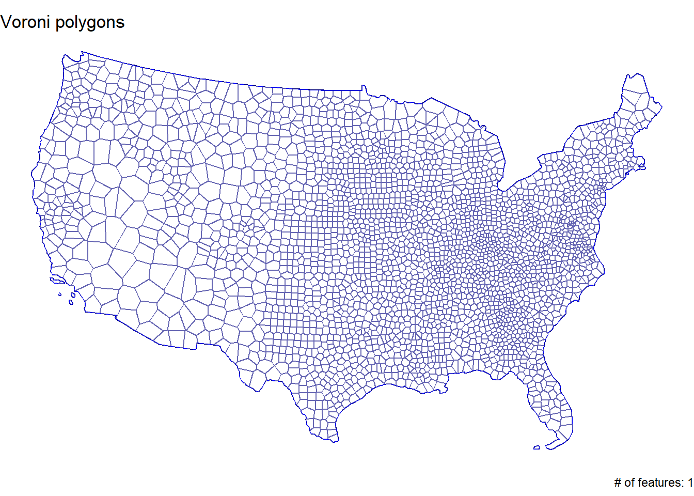
amap(tri, boundary_simplified, 'Triangles')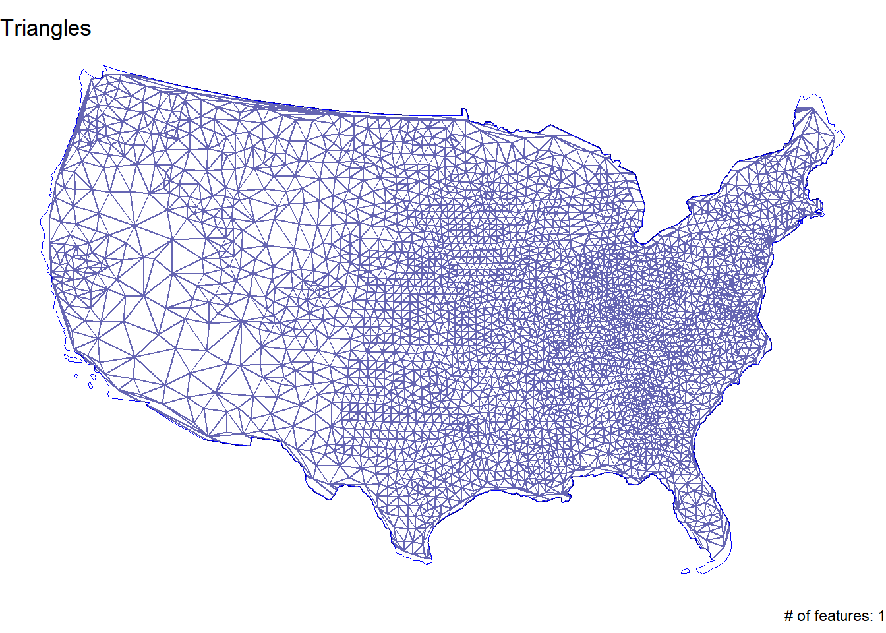
amap(grid, boundary_simplified, 'Square grid')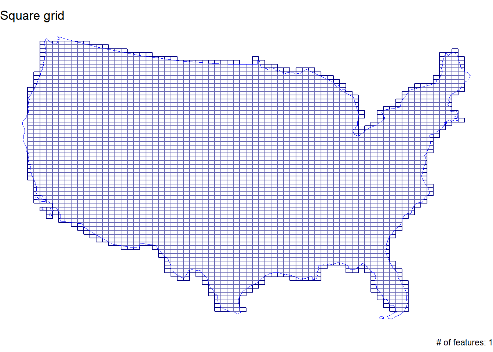
amap(hgrid, boundary_simplified, 'Hexagonal grid')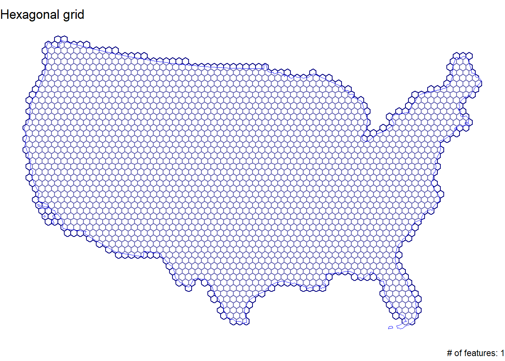
amap(counties, boundary_simplified, 'Original Counties')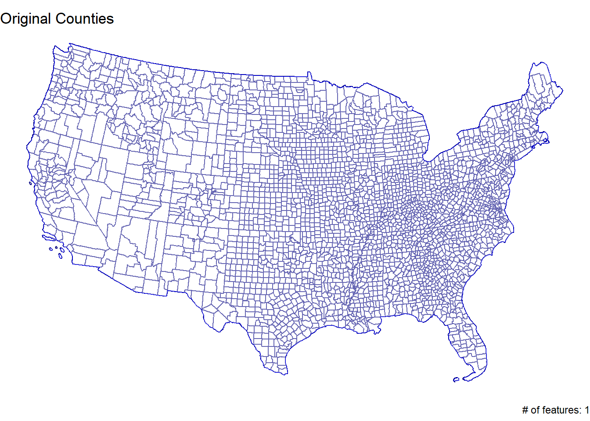
In this question, we will write out a function to summarize our tessellated surfaces.
sum_tess <- function(arg1, arg2) {
areas <- st_area(arg1) |>
set_units("km^2") |>
drop_units()
df_summary <- data.frame(
description = arg2,
feature_count = round(length(st_geometry(arg1))),
mean_area_km2 = round(mean(areas)),
sd_area = round(sd(areas)),
total_area_km2 = round(sum(areas))
)
return(df_summary)
}smry <- bind_rows(
sum_tess(tri, "triangulation"),
sum_tess(vrni, "voronoi"),
sum_tess(grid, 'grid'),
sum_tess(hgrid, 'hgrid')
)Warning: package 'flextable' was built under R version 4.4.3
Attaching package: 'flextable'The following objects are masked from 'package:kableExtra':
as_image, footnoteThe following object is masked from 'package:purrr':
composedescription | feature_count | mean_area_km2 | sd_area | total_area_km2 |
|---|---|---|---|---|
triangulation | 6,198 | 1,290 | 1,598 | 7,997,700 |
voronoi | 3,108 | 2,604 | 2,918 | 8,094,557 |
grid | 3,326 | 2,571 | 0 | 8,549,685 |
hgrid | 2,406 | 3,596 | 0 | 8,652,801 |
Comment on the traits of each tessellation. Be specific about how these traits might impact the results of a point-in-polygon analysis in the contexts of the modifiable areal unit problem and with respect computational requirements.
The grid and hexagonal grid are uniform tessellations; all the polygons are the exact same shape and size. This equally weights all areas of the US. The voroni polygons and triangluations vary in size based on the density of counties. These tesselations are generally correlated with population density because they are derived from county centroids which are more dense where there are more people.
For the remainder of this lab we will analyze the distributions of these dams using point-in-polygon analysis.
library(janitor)Warning: package 'janitor' was built under R version 4.4.3# Prefer a local NID CSV named `nation.csv`; otherwise download to that filename
nid_url <- "https://nid.sec.usace.army.mil/api/nation/csv"
dir.create("data", showWarnings = FALSE)
nid_dest <- "data/nation.csv"
if (file.exists(nid_dest)) {
message("Using local NID file: ", nid_dest)
} else {
tryCatch({
message("Downloading NID CSV to: ", nid_dest)
download.file(nid_url, nid_dest, quiet = FALSE, mode = "wb")
}, error = function(e) {
message("NID download failed: ", e$message)
})
}
# read the CSV (will error if download failed and file missing)
if (!file.exists(nid_dest)) stop("NID CSV not found at ", nid_dest)
dams <- readr::read_csv(nid_dest, skip =1, show_col_types = FALSE) |>
janitor::clean_names()Warning: One or more parsing issues, call `problems()` on your data frame for details,
e.g.:
dat <- vroom(...)
problems(dat)usa <- AOI::aoi_get(state = "conus") %>%
st_union() %>%
st_transform(5070)
dams2 <- dams %>%
filter(!is.na(latitude)) %>%
st_as_sf(coords = c("longitude", "latitude"), crs = 4326) %>%
st_transform(5070) %>%
st_filter(usa)pinp <- function(pts, polys, id_col, colname = 'point_count') {
if (st_crs(polys) != st_crs(pts)) {
message("Transforming crs's to match")
pts <- st_transform(pts, st_crs(polys))
}
joined <- st_join(pts, polys, join = st_intersects)
counts <- joined |>
st_drop_geometry() |>
count(.data[[id_col]], name = colname)
result <- polys |>
left_join(counts, by = id_col) |>
mutate(point_count = coalesce(point_count, 0)) # Replace NAs with 0
return(result)
}counties$id <- counties$fip_code
jgrid <- pinp(dams2, grid, 'id')
jhgrid <- pinp(dams2, hgrid, 'id')
jvrni <- pinp(dams2, vrni, 'id')
jtri <- pinp(dams2, tri, 'id')
jcntys <- pinp(dams2, counties, 'id')amap2 <- function(sf_obj1, sf_obj2, title = "map", fillvar = 'point_count') {
caption <- sum(sf_obj2$point_count)
plt <- ggplot() +
# CONUS outline)
geom_sf(data = sf_obj1, fill = "white", color = "navy", linewidth = 0.5) +
# tesselation
geom_sf(data = sf_obj2, aes(fill = get(fillvar)), alpha = 0.4) +
scale_fill_viridis_c(option = "plasma") +
theme_void() +
labs(
title = title,
caption = paste(caption, 'total dams'),
fill = fillvar
)
return(plt)
}Policy Analysis: Tessellation and Decision-Making
Now that you have dam counts across all five tessellation methods, compare the results. Specifically:
a. Create a side-by-side visualization (faceted or small multiples) showing dam clustering under each of the five tessellations. Use patchwork or cowplot to arrange the 5 plots you created in Step 3.5 for direct visual comparison.
Your answer should be 3–4 paragraphs and grounded in the actual visualizations and patterns you observe from your tessellation comparisons.
library(patchwork)Warning: package 'patchwork' was built under R version 4.4.3tr <- amap2(conus, jgrid, 'square grid')
tl <- amap2(conus, jhgrid, 'hexagonal grid')
br <- amap2(conus, jvrni, 'voronoi polygons')
bl <- amap2(conus, jtri, 'triangles')
bm <- amap2(conus, jcntys, 'counties')
combo <- (tl + tr) / (bl + bm + br)
combo +
plot_annotation(
title = "Comparison of Tesselations",
theme = theme(plot.title = element_text(hjust = 0.5, size = 16, face = "bold"))
)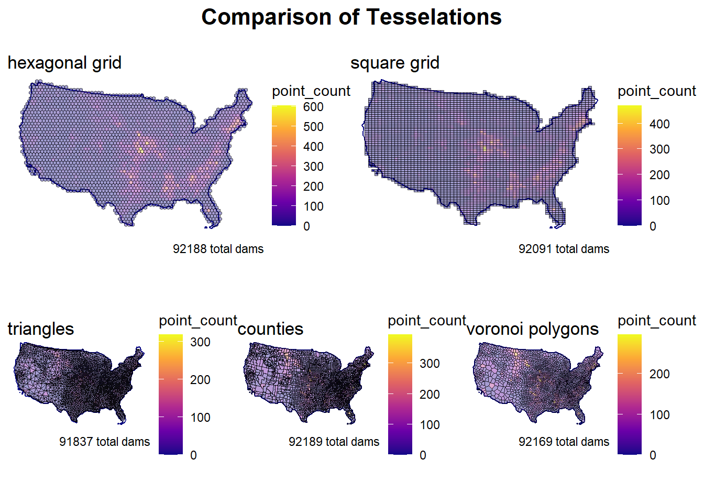
# I cant see any detail if they are all in the same plot
amap2(conus, jgrid, 'square grid')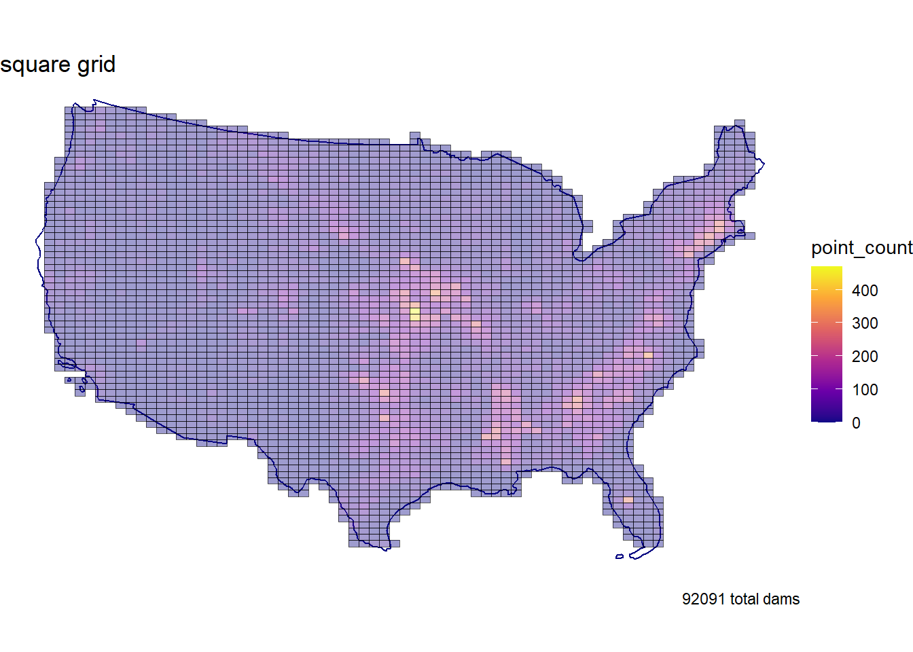
amap2(conus, jhgrid, 'hexagonal grid')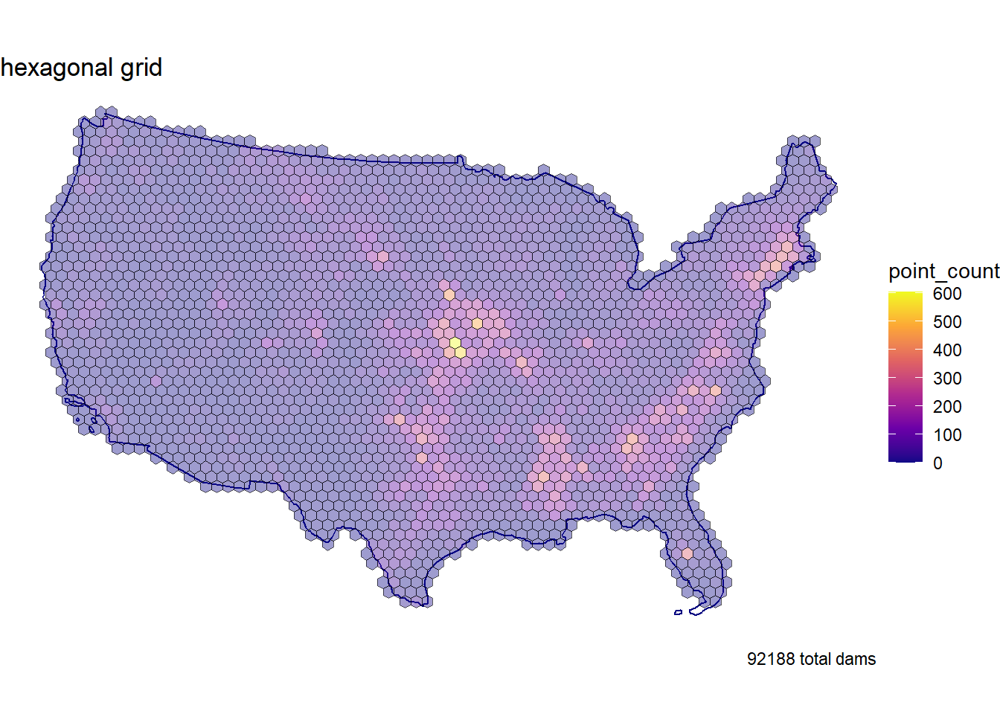
amap2(conus, jvrni, 'voronoi polygons')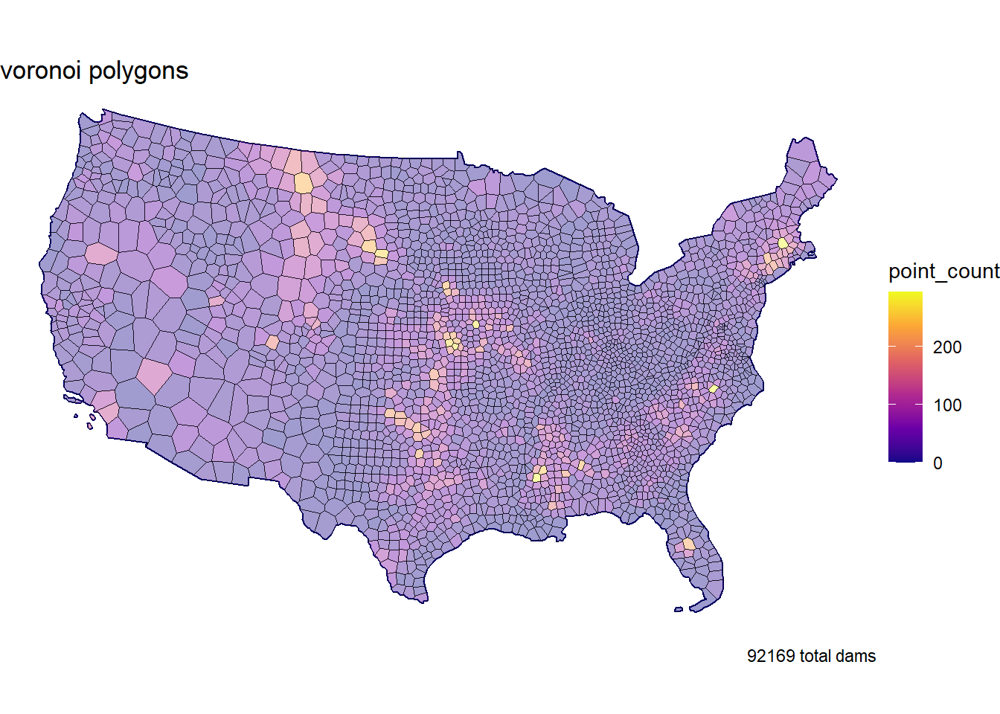
amap2(conus, jtri, 'triangles')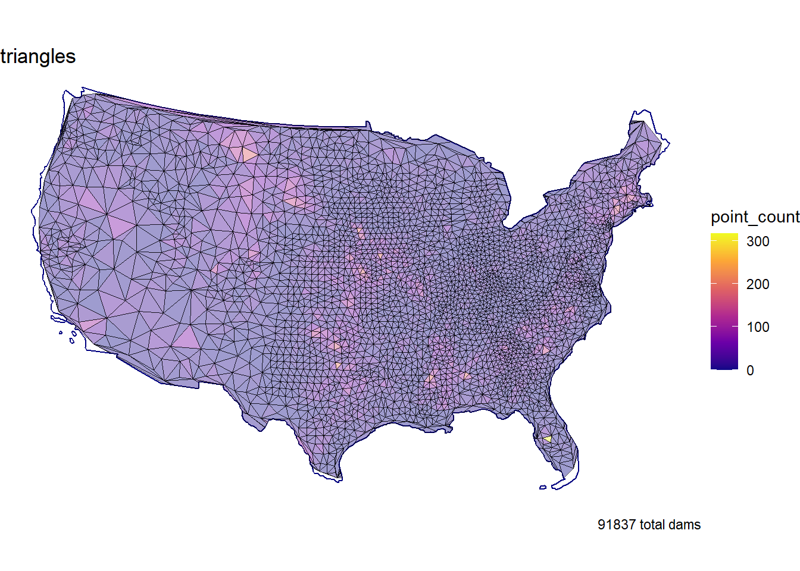
amap2(conus, jcntys, 'counties')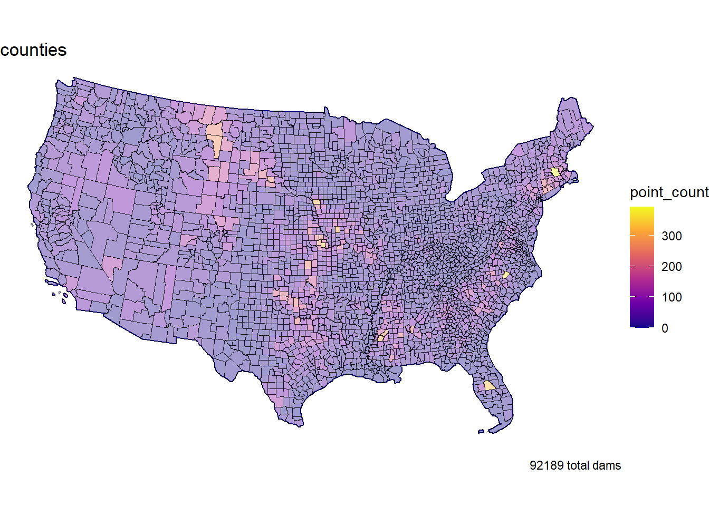
b. Identify 2–3 geographic regions where tessellation choice produces substantially different patterns (e.g., one method shows a clear hotspot while another shows diffuse distribution).
The voronoi polygons, triangles, and counties create a hotspot in Northwestern Montana that is not present in the grid tesselations. This is because the counties in Montana are large, so many dams are contained in one or two polygons. This creates a hotspot because the density of dams per polygon is high relative to the rest of the polygons.
In contrast, Appalachia is a hotspot in the gridded tessellations, but not in the irregular tessellations. This is because counties are very dense and small in this part of the country, and so most polygons in the irregular tessellations have very few dams. In the uniform tessellations, this area of the country has the most dams per area, and so a hotspot is visible.
c. Which single tessellation would you recommend to a dam operations manager seeking to understand geographic clustering?
The square gridded tessellation provides the best, most interpretable visualization for geographic clustering. Unlike Voronoi, triangles, or raw county boundaries, this tessellation is unbiased by the history of county boundary creations, conflicts, politics, population density, and natural features such as rivers and mountain ranges. It gives us a clear view of the country, allowing us to answer “where are dams most clustered?” without needing to consider how the county boundaries are affecting the visible patterns.
The irregular tessellations are not valid to understand geographic clustering. I cannot think of a use case for the Voronoi or triangle tessellations in the dam density context. The county polygon tessellation may be useful if you are specifically interested in which counties have many dams and if counties had jurisdiction over dams, but they typically don’t.
The hexagonal tessellation provides no clear advantage over the square and has the disadvantages of being unable to be converted into a raster format and being less common. The square tessellation best supports management decisions across many jurisdictional boundaries. However, we could adjust the size of our square grid based on the specific use case, as this may impact where clusters are visible.
The NID provides a comprehensive data dictionary here. In it we find that dam purposes are designated by a character code.
| abbr | purpose |
|---|---|
| I | Irrigation |
| H | Hydroelectric |
| C | Flood Control |
| N | Navigation |
| S | Water Supply |
| R | Recreation |
| P | Fire Protection |
| F | Fish and Wildlife |
| D | Debris Control |
| T | Tailings |
| G | Grade Stabilization |
| O | Other |
In the data dictionary, we see a dam can have multiple purposes.
In these cases, the purpose codes are concatenated in order of decreasing importance. For example, SCR would indicate the primary purposes are Water Supply, then Flood Control, then Recreation.
A standard summary indicates there are over 400 unique combinations of dam purposes:
unique(dams2$purposes) %>% length()[1] 574The result of this would indicate:
Your task is to create point-in-polygon counts for at least 4 of the above dam purposes:
ps <- c('Recreation', 'Flood Risk Reduction', 'Fire Protection, Stock, Or Small Fish Pond', 'Irrigation')
re <- paste(ps, collapse = "|")
dams3 <- dams2 |>
filter(!is.na(purposes)) |>
filter(str_detect(re, purposes))
jgrid2 <- pinp(dams3, grid, 'id')meanplussd <- mean(jgrid2$point_count) + sd(jgrid2$point_count)
amap2(conus, jgrid2, 'n') +
gghighlight(point_count>meanplussd)Warning: Could not calculate the predicate for layer 1; ignored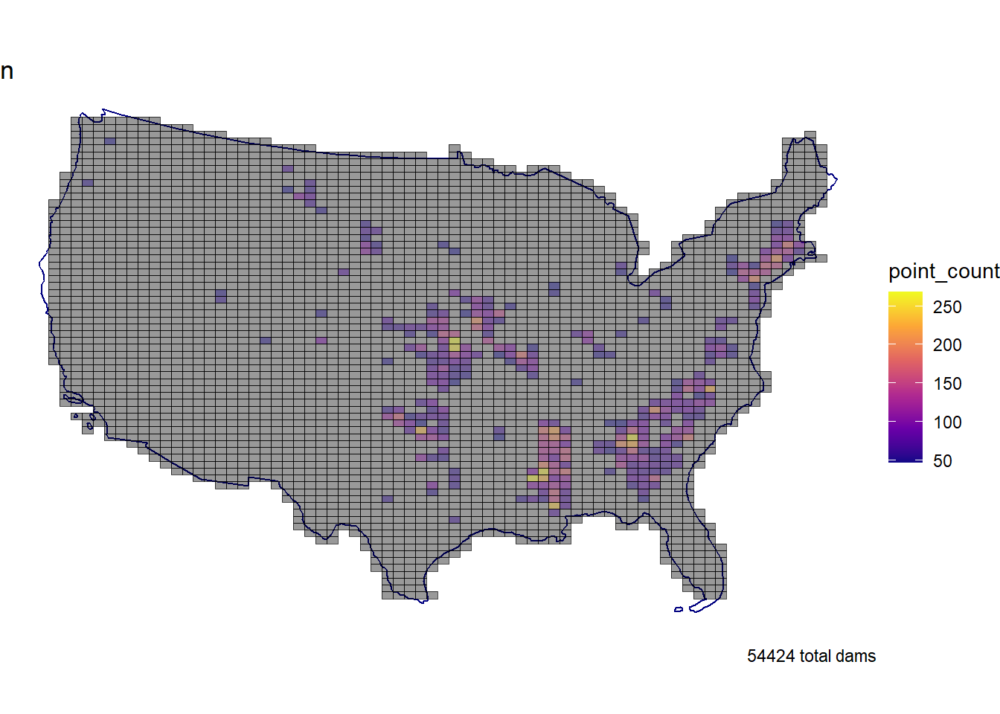
Comment on the geographic distribution of dams you found. Does it make sense? How might the tessellation you chose impact your findings? How does the distribution of dams coincide with other geographic factors such as river systems, climate, ect?
The hotspots in the Great Plains and Black Hills regions are a little surprising given the aridity and low population density. However, this dataset is a raw count of dams, so these hotspots may just be a lot of really small dams mostly for recreation purposes. I also doubt that these dams were truly built for recreation, although that may be their main purpose in the modern era. The uncontrolled dam building of the 50s, 60s, and 70s led to a lot of useless dams being built. The other hotspots are generally clustered where there is a lot of rainfall, rivers, and people.
Aggregate Dam Attributes by Tile
Using your cropped tessellation from Q1.4 (your recommended grid from Q3, clipped to CONUS boundary), compute mean and variance of key dam attributes within each tile.
# Suggested workflow (write your own implementation):
# 1) spatial join dams to your cropped tessellation
# 2) group by tile id and summarize n_dams, mean_year_completed, mean_surface_area
# 3) join summaries back to geometry and preserve zero-dam tiles
# 4) inspect distributions before mapping
joined <- st_join(grid, dams2) |>
group_by(id) |>
summarize(n_dams = n_distinct(dam_name, na.rm =TRUE), mean_y_c = mean(year_completed, na.rm=TRUE), mean_sa = mean(surface_area_acres, na.rm=TRUE)) |>
select(id, n_dams, mean_y_c, mean_sa)
# do it for counties to support Q6
jc <- st_join(counties, dams2) |>
group_by(id) |>
summarize(n_dams = n_distinct(dam_name, na.rm =TRUE), mean_y_c = mean(year_completed, na.rm=TRUE), mean_sa = mean(surface_area_acres, na.rm=TRUE)) |>
select(id, n_dams, mean_y_c, mean_sa)Produce visualizations showing spatial patterns:
Do you see geographic clustering of old vs. new dams? Large vs. small dams?
joined$age <- 2026 - joined$mean_y_c
jc$age <- 2026 - jc$mean_y_c
amap2(conus, joined, title='Mean Dam Age', fillvar='age')Warning: Unknown or uninitialised column: `point_count`.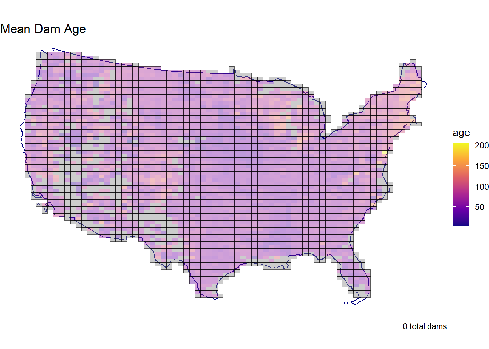
amap2(conus, joined, title='Mean Surface Area', fillvar='mean_sa')Warning: Unknown or uninitialised column: `point_count`.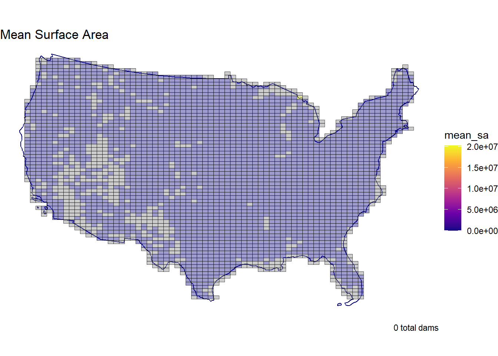
amap2(conus, joined, title='Number of dams', fillvar='n_dams')Warning: Unknown or uninitialised column: `point_count`.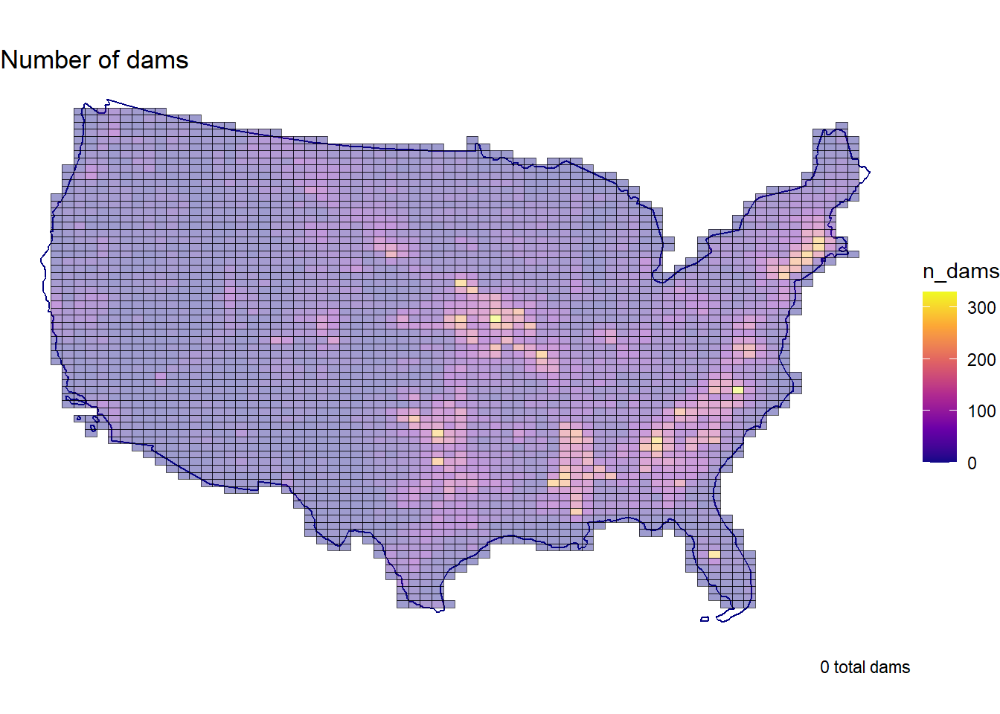
Dams are slighly older out West where irrigation farming is the only way to grow crops.
#install.packages('sfdep')
library(sfdep)Warning: package 'sfdep' was built under R version 4.4.3joined$geometry <- joined$st_collection_extract.sfc...POLYGON..
# Suggested workflow (write your own implementation):
# 1) build vectors for count, age, and size attributes by tile
# 2) handle NAs explicitly before matrix multiplication
# 3) compute spatial lag as W_std %*% attribute
# 4) correlate each attribute with its lag
# 5) report values and classify as weak/moderate/strong with your own thresholds
joined <- joined |>
mutate(mean_y_c2 = ifelse(is.na(mean_y_c), mean(mean_y_c, na.rm=TRUE), mean_y_c),
mean_sa2 = ifelse(is.na(mean_sa), mean(mean_sa, na.rm=TRUE), mean_sa),
n_dams2 = ifelse(is.na(n_dams), mean(n_dams, na.rm=TRUE), n_dams),
age2 = ifelse(is.na(age), mean(age, na.rm=TRUE), age),
neighbors = st_contiguity(geometry),
weights = st_weights(neighbors),
w_std_n_dams = st_lag(n_dams2, neighbors, weights),
w_std_age = st_lag(age2, neighbors, weights),
w_std_sa = st_lag(mean_sa2, neighbors, weights))
agecor <- cor(joined$age, joined$w_std_age, use="complete.obs")
damscor <- cor(joined$n_dams, joined$w_std_n_dams, use="complete.obs")
sacor <- cor(joined$mean_sa, joined$w_std_sa, use="complete.obs")
print(paste('age cor:', agecor, 'dams cor:', damscor, 'sa cor:', sacor))[1] "age cor: 0.644922786186633 dams cor: 0.836949844849981 sa cor: -6.48769107244848e-05"# redo for counties
jc <- jc |>
mutate(mean_y_c2 = ifelse(is.na(mean_y_c), mean(mean_y_c, na.rm=TRUE), mean_y_c),
mean_sa2 = ifelse(is.na(mean_sa), mean(mean_sa, na.rm=TRUE), mean_sa),
n_dams2 = ifelse(is.na(n_dams), mean(n_dams, na.rm=TRUE), n_dams),
age2 = ifelse(is.na(age), mean(age, na.rm=TRUE), age),
neighbors = st_contiguity(geometry),
weights = st_weights(neighbors),
w_std_n_dams = st_lag(n_dams2, neighbors, weights),
w_std_age = st_lag(age2, neighbors, weights),
w_std_sa = st_lag(mean_sa2, neighbors, weights))Summarize in a table:
table = data.frame(matrix(c('age' , round(agecor,2), 'moderate',
'n_dams', round(damscor,2), 'high', 'surface_area', round(sacor,2), 'none'),
ncol = 3, byrow = T)) %>%
setNames(c("name", "correlation", "qualitative evaluation"))
flextable(table)name | correlation | qualitative evaluation |
|---|---|---|
age | 0.64 | moderate |
n_dams | 0.84 | high |
surface_area | 0 | none |
Global Question: Do neighboring tiles resemble each other overall, or is the pattern weak?
Create a single Moran’s I scatterplot for one dam attribute from Step 5.2 (for example, mean year completed or dam count). Use standardized values on both axes: the attribute on the x-axis and the spatial lag on the y-axis. The plot should show whether points concentrate along the diagonal or remain widely dispersed.
# Suggested workflow (write your own implementation):
# 1) standardize the selected attribute and its spatial lag
# 2) assign HH / LL / HL / LH quadrants by sign of (z, lag_z)
# 3) produce a Moran scatterplot with dashed axes at 0
# 4) report quadrant counts and interpret what dominates
add_quadrants <- function(data, var1, var2, prefix = "age") {
data |>
mutate(
"{prefix}_z" := as.numeric(scale({{var1}})),
"{prefix}_z_std" := as.numeric(scale({{var2}})),
"{prefix}_quad" := case_when(
.data[[paste0(prefix, "_z")]] < 0 & .data[[paste0(prefix, "_z_std")]] < 0 ~ "LL",
.data[[paste0(prefix, "_z")]] < 0 & .data[[paste0(prefix, "_z_std")]] >= 0 ~ "LH",
.data[[paste0(prefix, "_z")]] >= 0 & .data[[paste0(prefix, "_z_std")]] >= 0 ~ "HH",
TRUE ~ "HL"
)
)
}
joined <- joined |>
add_quadrants(age, w_std_age, prefix = "age") |>
add_quadrants(n_dams, w_std_n_dams, prefix = "n_dams") |>
add_quadrants(mean_sa, w_std_sa, prefix = "sa")
jc <- jc |>
add_quadrants(age, w_std_age, prefix = "age") |>
add_quadrants(n_dams, w_std_n_dams, prefix = "n_dams") |>
add_quadrants(mean_sa, w_std_sa, prefix = "sa")
ggplot(data=joined, aes(x=age_z, y=age_z_std)) +
geom_point() +
geom_hline(yintercept=0) +
geom_vline(xintercept=0) +
labs(title=paste("Moran's I for dam age:",round(agecor,2)))Warning: Removed 497 rows containing missing values or values outside the scale range
(`geom_point()`).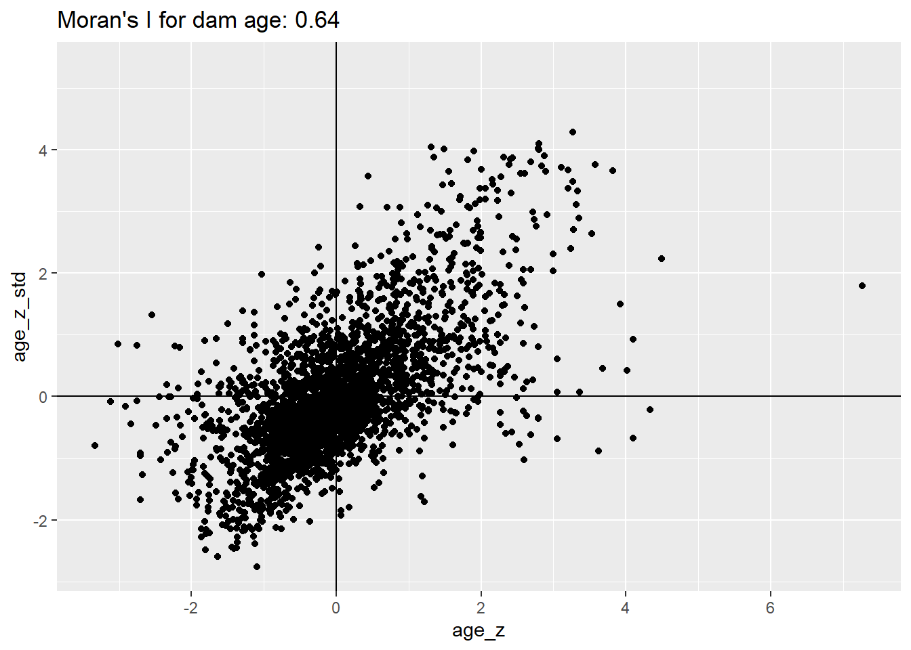
flextable(joined |>
count(age_quad, sort = TRUE)|>
st_drop_geometry())age_quad | n |
|---|---|
LL | 1,296 |
HL | 852 |
HH | 833 |
LH | 345 |
a. Spatial Clustering Patterns (Quantitative + Geographic)
Number of dams is strongly spatially correlated. This is because dams are concentrated in areas with wet climates, arable land, and people who need water. Deserts and areas with low population typically do not have large numbers of dams. Dam age is also correlated, although not as strongly as number of dams. As the population of the US moved West, they built dams when water resources became stretched thin between the people living there. Most dams were also built during periods when funding was large such as the 1930s Tennessee Valley Authority era. Dam size is not clustered. It’s unlikely a small area (such as one tile in our tessellation) can support many large dams. Also, our metric for investigating dam size is the mean surface area of the dams within each grid cell. So some spatial autocorrelation is likely lost in this averaging.
b. Moran Scatterplot Interpretation (Visualization)
Points generally cluster near the diagonal, suggesting positive spatial autocorrelation. There are a few notable outliers. The number of dams is a much stronger correlation than the age of dams. The surface area of dams is not spatially autocorrelated.
c. Spatial Structure Implications
The clustering is weak for dam surface area, moderate for dam age, and strong for number of dams. Management factors, the population expansion of the US, and the history of dam building drives the correlation in age and number of dams. Hydrologic factors are also visible as there are no dams in the Southwestern deserts and there are many dams in the East.
In this question, you’ll analyze LISA using your recommended tessellation from Q3 AND counties as a required comparison unit. This contrast (regular tessellation vs administrative boundaries) reveals MAUP much more clearly than comparing two regular grids.
# my tesselations are already cropped and spatial lags are already calculatedCompute neighbors and spatial lag for your recommended tessellation:
# my tesselations are already cropped and spatial lags are already calculatedLOCAL Question: WHERE specifically are high-high, low-low, high-low, and low-high clusters? (Answer: Geographic map showing which regions belong to which quadrant)
ggplot(data=joined, aes(x=n_dams_z, y=n_dams_z_std)) +
geom_point() +
geom_hline(yintercept=0) +
geom_vline(xintercept=0)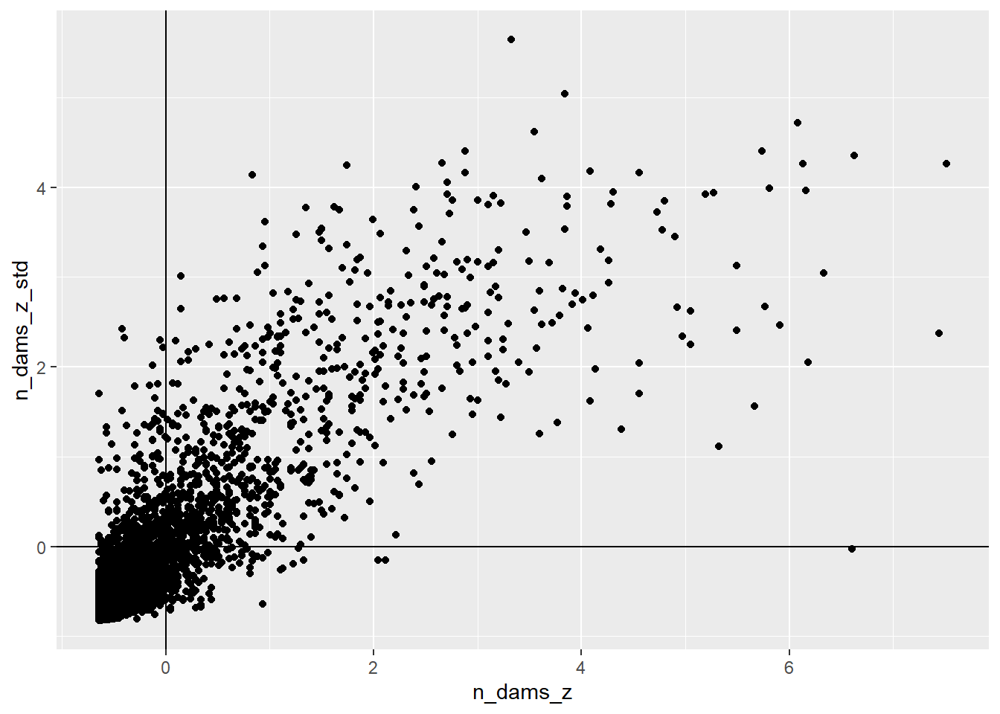
quad_colors <- c(
"LL" = "blue",
"HL" = "yellow",
"LH" = "cyan",
"HH" = "red"
)
ggplot() +
geom_sf(data = joined, aes(fill = n_dams_quad)) +
scale_color_manual(values = quad_colors) +
theme_void() +
labs(title = 'Number of Dams LISA plot', fill = 'Spatial correlation quadrant')Warning: No shared levels found between `names(values)` of the manual scale and the
data's colour values.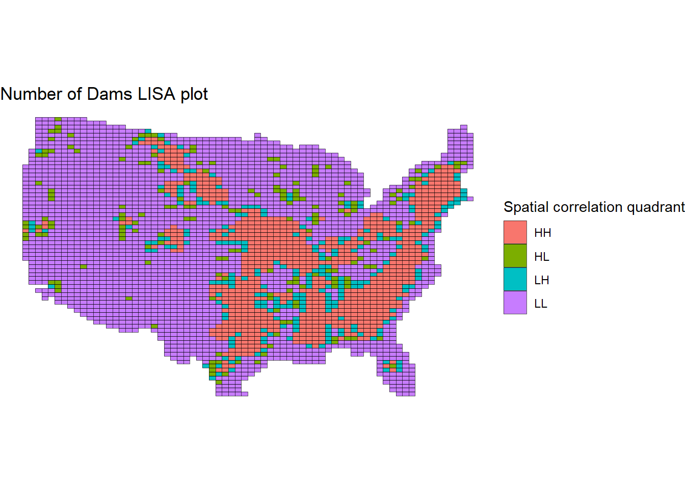
Comparison with required county baseline:
a. Repeat Steps 6.2–6.3 for counties.
b. REQUIRED DELIVERABLE: Create side-by-side LISA maps of your chosen tessellation (from Q3) and counties in the same figure. Use identical quadrant labels and color mapping in both panels so visual differences reflect unit choice, not styling.
library(patchwork)
left <- ggplot() +
geom_sf(data = joined, aes(fill = n_dams_quad)) +
scale_color_manual(values = quad_colors) +
theme_void() +
labs(caption = 'Raster Tesselation', fill = 'Quadrant')
right <- ggplot() +
geom_sf(data = jc, aes(fill = n_dams_quad)) +
scale_color_manual(values = quad_colors) +
theme_void() +
labs(caption = 'Counties', fill = 'Quadrant')
combo <- left + right
combo +
plot_annotation(
title = "Comparing tessalations",
theme = theme(plot.title = element_text(size = 18, face = "bold", hjust = 0.5))
)Warning: No shared levels found between `names(values)` of the manual scale and the
data's colour values.
No shared levels found between `names(values)` of the manual scale and the
data's colour values.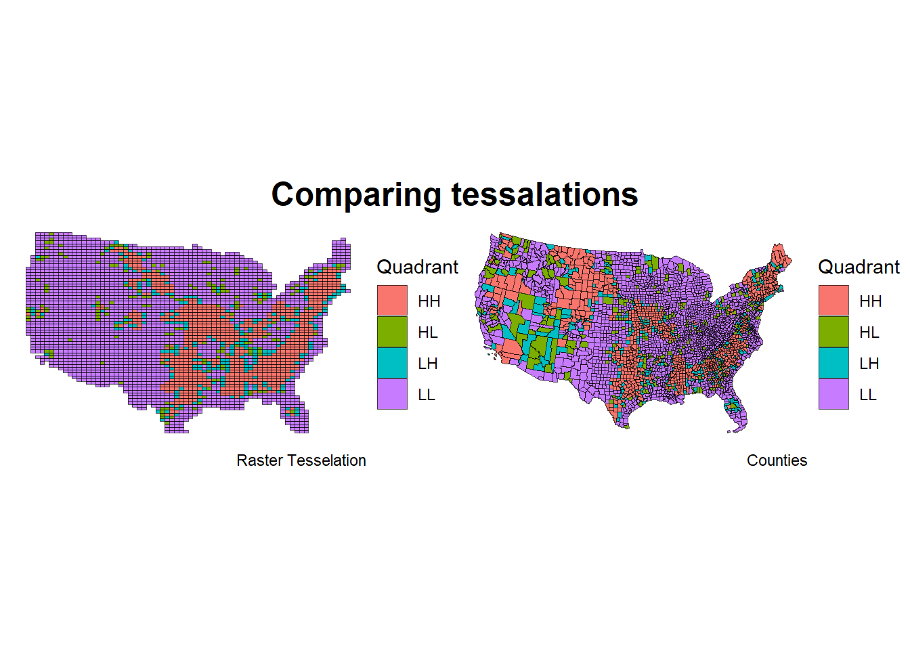
c. Quantitative comparison: For both units, count the number of polygons in each quadrant. Example output: - Hexagon: HH=15 tiles, LL=23 tiles, HL=5 tiles, LH=2 tiles - Counties: HH=205 counties, LL=1300 counties, HL=240 counties, LH=360 counties - Interpretation: Are quadrant distributions similar (robust LISA pattern) or different (MAUP sensitive at local scale)?
flextable(joined |>
count(age_quad, sort = TRUE)|>
st_drop_geometry()) |>
set_caption('Square Grid')age_quad | n |
|---|---|
LL | 1,296 |
HL | 852 |
HH | 833 |
LH | 345 |
flextable(jc |>
count(age_quad, sort = TRUE)|>
st_drop_geometry()) |>
set_caption('Counties')age_quad | n |
|---|---|
LL | 1,434 |
HH | 771 |
HL | 582 |
LH | 321 |
d. Interpret: Which unit reveals clustering more clearly for your purpose? Do patterns align between your chosen tessellation and counties, or does MAUP (modifiable areal unit problem) create divergent local structure?
The MAUP creates different answers for each tessellation. Areas with large counties such as Wyoming and Southern California have large hotspots in the counties tessellation where dam density is actually relatively low.
Geographic Interpretation and Management Implications
a. Geographic hotspots and coldspots: Identify major clustering regions:
In the gridded tessellation, the hotspots are:
The great plains of central Texas, Kansas, Nebraska, and Iowa; Lots of irrigated agriculture, medium population density The lower Mississippi River Valley in Mississippi: Highest rainfall in the US Western and Central Montana and South Dakota: The Missouri River and it’s tributaries are dammed extensively The Colorado Front Range: Water is scarce, people are not The California Central Valley: Tons of irrigated agriculture requires tons of dams Appalachia: Legacy of the TVA and flood prevention gone overboard New England and Upstate New York: Lots of people have been there for a long time
The county tessellation adds hotspots where there a big counties in: Wyoming Central Washington Southern Oregon Southern California
The coldspots are:
The desert Southwest; no water, no dams Florida; Limestone geology creates great aquifers for groundwater extraction so there is less need for dams The upper midwest; Thousands of glacier-carved lakes create natural reservoirs Maine; Sparsely populated and plenty of rain for agriculture
b. Outliers and anomalies: Are there notable HL or LH tiles? What might explain them?
HL and LH tiles typically surround coldspots and hotspots. This is just an artifact of the LISA system and isn’t very meaningful
c. Unit comparison: Does analysis unit choice (hexagon vs. county) affect LISA conclusions? How does MAUP operate at the local scale?
Yes, counties have different hotspots because it’s not measuring dams per unit area.
d. Implications for management: How does LISA output inform dam operations, reporting, or policy?
I don’t think the LISA output should be used to inform policy or management in any way. In our analysis we give tiny fishing ponds formed by a pile of dirt the same weight as Lake Mead and the Hoover Dam… Our map loosely reflects the hydrological and anthropogenic factors that drive dam development in the US. That is all it should be used to inform.